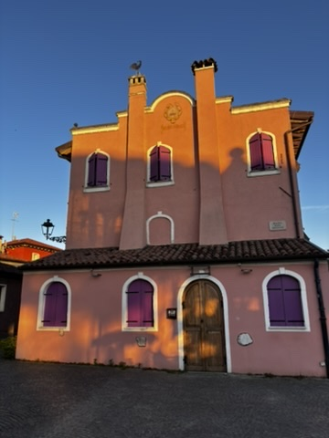
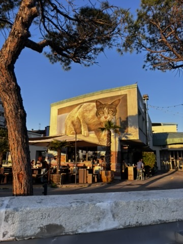
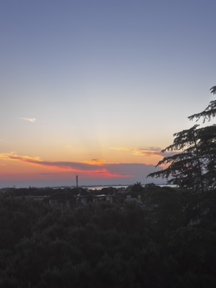
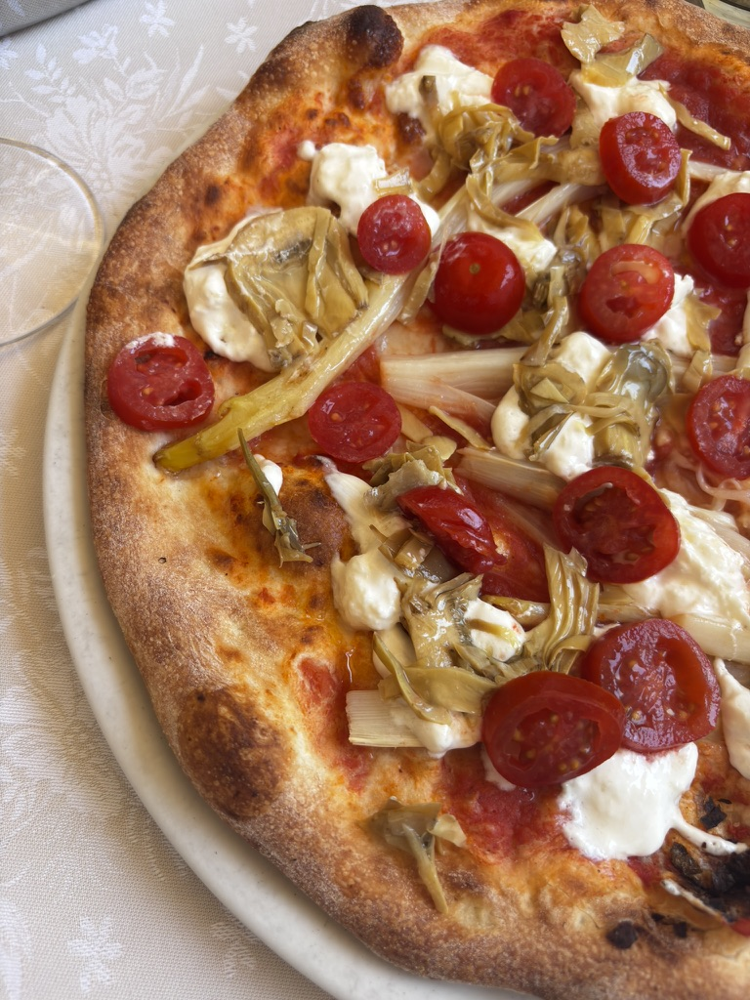
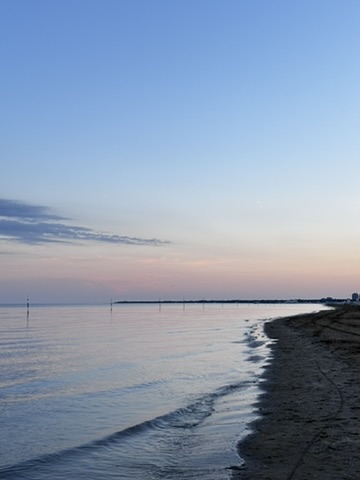

I came to Caorle after a bike race. My legs were finished, my kit was still damp, and my plan was to do nothing for two days — eat well, lie horizontal, and watch the Adriatic do what the Adriatic does. Caorle, a small fishing town wedged between Venice and Trieste on the northeastern Italian coast, turned out to be exactly the right place for exactly that.
The old town
Caorle has the same DNA as Burano — the painted houses, the canals, the feeling that someone long ago decided that there was no reason a fishing village couldn't also be beautiful. The colours here are dusty rather than saturated: ochre, salmon, faded terracotta, a blue that looks like it's been bleached by salt air. The streets are narrow and lead in unpredictable directions and are generally where you want to be.

Houses that look like they belong in a doll's story. Caorle old town, early morning, nobody around yet.
There is street art scattered through the alleys — not the aggressive kind but the kind that suggests someone was paying attention to the walls and decided they could hold more. Found a mural that stopped me for longer than expected. Something about the light and the scale of it against those old stones.

The alleys have opinions. Good ones.
The beach
The Caorle beach is long and flat and in the morning, before the umbrellas go up and the families arrive, it is exactly what a beach should be. I walked it barefoot from one end to the other. The water was cold. The sky was doing something dramatic with the light. After three days of gravel racing and road grime, this was the closest thing to a reset I could ask for.

Empty beach before the sun gets too serious about it. This is the one.
The food
I had pizza every day. This is not a confession — it is a statement of intent and also a logical response to being in northeastern Italy with a post-race appetite and the local knowledge that everything here comes out of a wood oven and lands on the plate looking like it means something. The pizza in Caorle is thin and charred at the edges and the kind of thing you want to eat slowly so it lasts longer.

Pizza lover forever. No notes. The crust was perfect.
The sunset, and the morning after
The Caorle sunsets happen over the lagoon side of town, not the beach, which means they are framed by boats and old walls and the silhouettes of the belltower. I stood and watched one and felt the specific contentment of a person who has nowhere to be and has remembered this fact in time to enjoy it.

The magic Caorle sunset. The lagoon side. Worth the walk across town to find it.
In the morning I was up early without trying. The town was empty. The light was low and gold and everything had the quality of being just before the day begins — quiet, unhurried, yours. I walked again. I had a coffee standing at a bar the way Italians do. I took my time leaving because Caorle is a town that earns an extra hour without asking for it.

Sunrise chaser, always. The early morning belongs to you in a way the rest of the day doesn't.
I left with sand still in my shoes and a strong opinion that Caorle belongs on a shortlist of places to return to when you need Italy to be small and quiet and exactly itself.